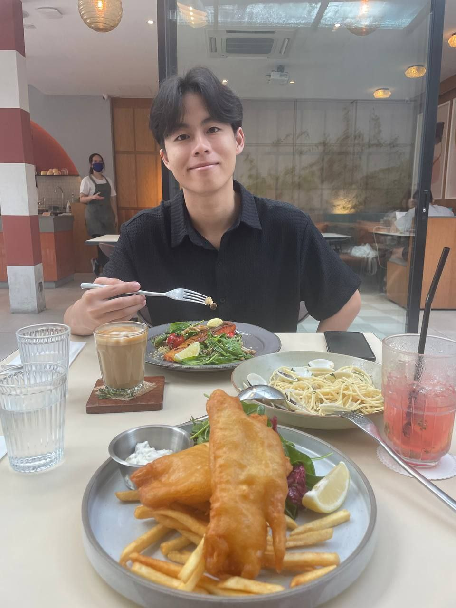

Chew Li Yang

Summary
Analytically driven individual with a strong foundation in data engineering and business analytics. Proficient in Python,
SQL, and data visualization techniques. Passionate about expand my understanding of the various programming
languages available and leveraging data to address complex financial challenges, including analysing the feasibility of
a project and improving on business models. Eager to delve into the possibilities of a career related to data.
Education
Nanyang Technological University (2022 - 2025)
- Bachelor of Business, Specialisation in Business Analytics
- Relevant Coursework: Analytics I, Decision making with programming & analytics, Designing & Developing
Databases, Statistics & Analysis, intermediate excel, financial management, AI in accounting and Finance
Work Experience
- Singlife Business Intelligence Intern (May 2024 - Aug 2024)
- Worked under the data science and analytics team to script and maintain multiple dashboards for business
stakeholders using SQL, Python, and Qlik
- Did Data extraction use SQL for weekly reporting to business owners like the affinity business
- Responsible for the Mindef/Mha dashboard project where create query scripts and procedures to generate a
dashboard that consolidates all Mindef and Mha policies under Singlife. Allows for relevant stakeholders
(Singlife, Mindef, Mha) to have a detailed understanding of the group business.
- Great Eastern Life (GE) Service Recovery Contractor(Dec 2021 - June 2022)
- Conduct reviews to monitor if Agency Force have duly fulfilled T&C requirements as
set out in Agency Management guidelines, achieving a 40% update in the company's client
database.
- Utilized financial analysis to assess and rectify oversold policies by Great Eastern financial advisors, successfully
completing a project mandated by the Monetary Authority of Singapore (MAS) within four months.
- Spearheaded a team of four in the data entry of over 13,000 client profiles into the company's database,
coordinating with other GE office teams to organize client data within a two-month timeframe.
Competitions
- Accenture Case Competition
- Leveraged SQL and R to query, analyse, and visualize data on energy usage for a hypothetical country, and
developed a 50-year plan to achieve net zero carbon emissions.
Skills
- Programming Languages
- Python,SQL,R,HTML,CSS,React native,Java script
- Visualization Tools
- Qlikcloud, Qliksense, Microsoft PowerBI, Tableu
- Microsoft Suite
- Microsoft Word, Microsoft Excel, PowerPoint
Co-Curricular Activities
- NTU Business Analytics Club (BAC), Events Manager
- Managed an excel training workshops where we taught essential excel skillsets to available students in the school.
- Underwent training workshops where I learnt skillsets essential to data analytics such as git hub basics, html,
tableau.
Others